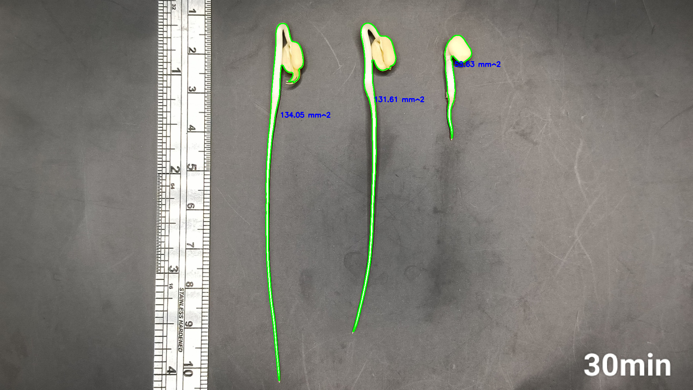
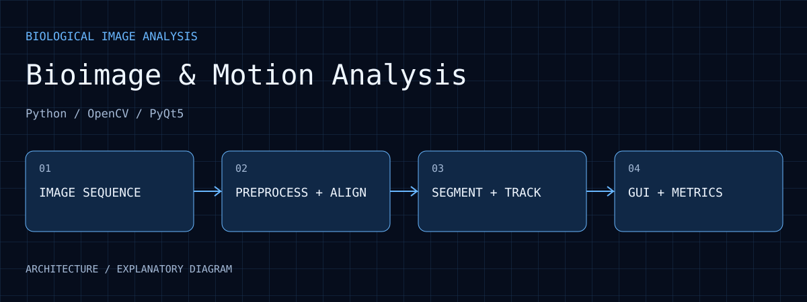

Tool workflow
The research connects preprocessing, segmentation, registration, motion analysis and an operating interface.
Bioimage & Motion Analysis
Python, OpenCV, and PyQt5 tools for preprocessing, segmentation, registration, and motion analysis, extending experimental images into an operable analysis workflow.
01 / EVIDENCE

The saved analysis shows contours, a ruler and area annotations. Values depend on the original scale and segmentation settings; no treatment effect is inferred.
Open full size ↗The research connects preprocessing, segmentation, registration, motion analysis and an operating interface.
Original, binary and contour-overlay views illustrate changes across analysis stages.
Interpret results under the annotation, scale and data conditions; no generalization accuracy is invented here.
02 / WALKTHROUGH
Frame order, acquisition times and pixel scale determine what later numbers mean. Global movement needs inspection or registration so camera movement is not mistaken for target motion.
Thresholding and morphology change connected regions and contours. Comparing source, binary mask and overlay reveals merges, splits and missed targets that a clean-looking mask can conceal.
Area annotations in the public example should be read alongside their contours. Pixel counts support pixel-area comparisons; physical area requires spatial calibration. Across frames, confirm target identity rather than attributing a parameter change to growth or motion.
The tool makes analysis steps inspectable. Acquisition firmware, image-analysis software and generalization evaluation remain separate work, not an unverified fully automatic recognition system.
03 / PURPOSE
Organize experimental images, observe biological motion, and compare analysis outputs.
04 / ARCHITECTURE

Experimental images or video retain frame order and spatial scale.
Python/OpenCV preprocessing, segmentation and registration make frame comparisons more consistent.
Region and motion changes become outputs that can be compared with manual annotation.
PyQt5 brings parameters, images and results together for iterative inspection.
05 / WORKFLOW
Check source, frame timing and pixel scale.
Address background and displacement before comparison.
Extract regions and inspect how parameters affect measured changes.
Inspect labels and output together to identify errors and applicable conditions.
06 / ANALYSIS
Whole-frame camera or sample displacement can resemble target motion. Registration and background inspection help distinguish them.
Thresholds and morphology change contours, areas and connected regions. Save parameters with images, not only final numbers.
Original/output comparisons expose misses, merges and split errors before deciding whether experiments are comparable.
07 / REPRODUCE
08 / LIMITS
This research workflow is separate from the public SpaceCellCam capture firmware. Unpublished images and research code are not provided.
09 / SOURCES
Selected images retain their visual content. Captions distinguish prototype photographs, application interfaces, archived records, analysis and simulations.